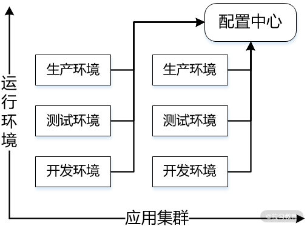
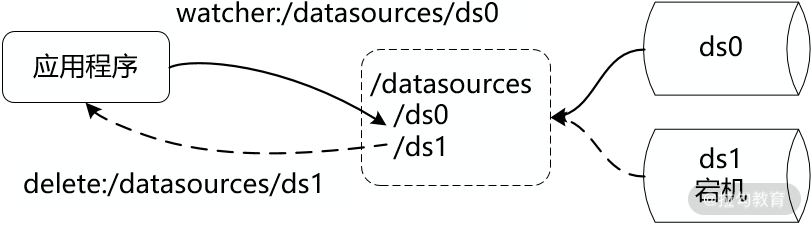
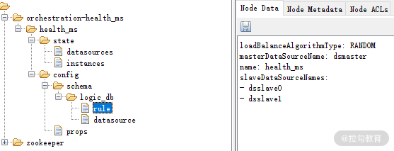

- 00 如何正确学习一款分库分表开源框架？.md.html
- 01 从理论到实践：如何让分库分表真正落地？.md.html
- 02 顶级项目：ShardingSphere 是一款什么样的 Apache 开源软件？.md.html
- 03 规范兼容：JDBC 规范与 ShardingSphere 是什么关系？.md.html
- 04 应用集成：在业务系统中使用 ShardingSphere 的方式有哪些？.md.html
- 05 配置驱动：ShardingSphere 中的配置体系是如何设计的？.md.html
- 06 数据分片：如何实现分库、分表、分库+分表以及强制路由？（上）.md.html
- 07 数据分片：如何实现分库、分表、分库+分表以及强制路由？（下）.md.html
- 08 读写分离：如何集成分库分表+数据库主从架构？.md.html
- 09 分布式事务：如何使用强一致性事务与柔性事务？.md.html
- 10 数据脱敏：如何确保敏感数据的安全访问？.md.html
- 11 编排治理：如何实现分布式环境下的动态配置管理？.md.html
- 12 从应用到原理：如何高效阅读 ShardingSphere 源码？.md.html
- 13 微内核架构：ShardingSphere 如何实现系统的扩展性？.md.html
- 14 分布式主键：ShardingSphere 中有哪些分布式主键实现方式？.md.html
- 15 解析引擎：SQL 解析流程应该包括哪些核心阶段？（上）.md.html
- 16 解析引擎：SQL 解析流程应该包括哪些核心阶段？（下）.md.html
- 17 路由引擎：如何理解分片路由核心类 ShardingRouter 的运作机制？.md.html
- 18 路由引擎：如何实现数据访问的分片路由和广播路由？.md.html
- 19 路由引擎：如何在路由过程中集成多种路由策略和路由算法？.md.html
- 20 改写引擎：如何理解装饰器模式下的 SQL 改写实现机制？.md.html
- 21 执行引擎：分片环境下 SQL 执行的整体流程应该如何进行抽象？.md.html
- 22 执行引擎：如何把握 ShardingSphere 中的 Executor 执行模型？（上）.md.html
- 23 执行引擎：如何把握 ShardingSphere 中的 Executor 执行模型？（下）.md.html
- 24 归并引擎：如何理解数据归并的类型以及简单归并策略的实现过程？.md.html
- 25 归并引擎：如何理解流式归并和内存归并在复杂归并场景下的应用方式？.md.html
- 26 读写分离：普通主从架构和分片主从架构分别是如何实现的？.md.html
- 27 分布式事务：如何理解 ShardingSphere 中对分布式事务的抽象过程？.md.html
- 28 分布式事务：ShardingSphere 中如何集成强一致性事务和柔性事务支持？（上）.md.html
- 29 分布式事务：ShardingSphere 中如何集成强一致性事务和柔性事务支持？（下）.md.html
- 30 数据脱敏：如何基于改写引擎实现低侵入性数据脱敏方案？.md.html
- 31 配置中心：如何基于配置中心实现配置信息的动态化管理？.md.html
- 32 注册中心：如何基于注册中心实现数据库访问熔断机制？.md.html
- 33 链路跟踪：如何基于 Hook 机制以及 OpenTracing 协议实现数据访问链路跟踪？.md.html
- 34 系统集成：如何完成 ShardingSphere 内核与 Spring+SpringBoot 的无缝整合？.md.html
- 35 结语：ShardingSphere 总结及展望.md.html
- 捐赠
11 编排治理：如何实现分布式环境下的动态配置管理？
随着分布式系统和微服务架构的持续发展，对系统中存在的各种服务和资源进行统一治理已经成为系统架构设计过程中的一个基础要点。ShardingSphere 作为一款分布式数据库中间件，同样集成了编制治理方面的功能。
今天的内容围绕如何使用 ShardingSphere 所提供的编排治理功能进行展开，课时思路与上一课时的风格一致，即先讨论 ShardingSphere 对编排治理的抽象过程，然后给出在开发过程中，基于配置中心介绍集成编排治理功能的系统改造方案。
ShardingSphere 如何抽象编排治理？
ShardingSphere 的编排治理功能非常丰富，与日常开发紧密相关的是它的配置中心和注册中心功能。ShardingSphere 对这两个功能提供了自己的抽象和实现方案。
ShardingSphere 中的配置中心
关于配置信息的管理，常见的做法是把它们存放在配置文件中，我们可以基于 YAML 格式或 XML 格式的配置文件完成配置信息的维护，这在 ShardingSphere 中也都得到了支持。在单块系统中，配置文件能够满足需求，围绕配置文件展开的配置管理工作通常不会有太大挑战。但在分布式系统中，越来越多的运行时实例使得散落的配置难于管理，并且，配置不同步导致的问题十分严重。将配置集中于配置中心，可以更加有效地进行管理。
采用配置中心也就意味着采用集中式配置管理的设计思想。在集中式配置中心内，开发、测试和生产等不同的环境配置信息统一保存在配置中心内，这是一个维度。另一个维度就是需要确保分布式集群中同一类服务的所有服务实例保存同一份配置文件并且能够同步更新。配置中心的示意图如下所示：
 集中式配置管理的设计思想
在 ShardingSphere 中，提供了多种配置中心的实现方案，包括主流的 ZooKeeeper、Etcd、Apollo 和 Nacos。开发人员也可以根据需要实现自己的配置中心并通过 SPI 机制加载到 ShardingSphere 运行时环境中。
另一方面，配置信息不是一成不变的。对修改后的配置信息的统一分发，是配置中心可以提供的另一个重要能力。配置中心中配置信息的任何变化都可以实时同步到各个服务实例中。在 ShardingSphere 中，通过配置中心可以支持数据源、数据表、分片以及读写分离策略的动态切换。
同时，在集中式配置信息管理方案的基础上，ShardingSphere 也支持从本地加载配置信息的实现方案。如果我们希望以本地的配置信息为准，并将本地配置覆盖配置中心的配置，通过一个开关就可以做到这一点。
ShardingSphere 中的注册中心
在实现方式上，注册中心与配置中心非常类似，ShardingSphere 也提供了基于 ZooKeeeper 和 Etcd 这两款第三方工具的注册中心实现方案，而 ZooKeeeper 和 Etcd 同样也可以被用作配置中心。
注册中心与配置中心的不同之处在于两者保存的数据类型。配置中心管理的显然是配置数据，但注册中心存放的是 ShardingSphere 运行时的各种动态/临时状态数据，最典型的运行时状态数据就是当前的 Datasource 实例。那么，保存这些动态和临时状态数据有什么用呢？我们来看一下这张图：
 注册中心的数据存储和监听机制示意图
注册中心一般都提供了分布式协调机制。在注册中心中，所有 DataSource 在指定路径根目录下创建临时节点，所有访问这些 DataSource 的业务服务都会监听该目录。当有新 DataSource 加入时，注册中心实时通知到所有业务服务，由业务服务做相应路由信息维护；而当某个 DataSource 宕机时，业务服务通过监听机制同样会收到通知。
基于这种机制，我们就可以提供针对 DataSource 的治理能力，包括熔断对某一个 DataSource 的数据访问，或禁用对从库 DataSource 的访问等。
在 ShardingSphere 中，注册中心更多地面向框架内部使用，普通场景下不需要过多了解注册中心的使用方法。目前，ShardingSphere 针对注册中心所打造的面向开发人员的功能也还比较有限。因此，今天我们重点关注配置中心的使用方式，关于注册中心的讨论，我们放在源码解析部分进行展开。接下来，我将带领你完成集成配置中心的系统改造工作。
系统改造：如何集成配置中心？
由于配置中心的创建需要依赖第三方工具，所以我们需要先完成开发环境的准备工作。
准备开发环境
为了集成配置中心，第一步需要引入 ShardingSphere 中与编排治理相关的依赖包。在 Spring Boot 环境中，这个依赖包是 sharding-jdbc-orchestration-spring-boot-starter：
<dependency>
<groupId>org.apache.shardingsphere</groupId>
<artifactId>sharding-jdbc-orchestration-spring-boot-starter</artifactId>
</dependency>
在接下来的内容中，我们将演示如何基于 ZooKeeeper 这款分布式协调工具来实现配置中心。而在 ShardingSphere 中，集成的 ZooKeeeper 客户端组件是 Curator，所以也需要引入 sharding-orchestration-reg-zookeeper-curator 组件：
<dependency>
<groupId>org.apache.shardingsphere</groupId>
<artifactId>sharding-orchestration-reg-zookeeper-curator</artifactId>
</dependency>
当然，如果我们使用的是 Nacos，那么也需要添加相关的依赖包：
<dependency>
<groupId>org.apache.shardingsphere</groupId>
<artifactId>sharding-orchestration-reg-nacos</artifactId>
</dependency>
<dependency>
<groupId>com.alibaba.nacos</groupId>
<artifactId>nacos-client</artifactId>
</dependency>
配置好这些之后，开发环境已经就绪，对于配置中心而言，开发人员主要的工作还是配置，我们一起来看一下有哪些针对配置中心的配置项。
掌握配置项
针对配置中心，ShardingSphere 提供了一系列的 DataSource，包括用于数据分片的 OrchestrationShardingDataSource、用于读写分离的 OrchestrationMasterSlaveDataSource 以及用于数据脱敏的 OrchestrationEncryptDataSource。围绕这些 DataSource，也存在对应的 DataSourceFactory 工厂类。这里以 OrchestrationMasterSlaveDataSourceFactory 为例来看创建 DataSource 所需要的配置类：
public final class OrchestrationMasterSlaveDataSourceFactory {
public static DataSource createDataSource(final Map<String, DataSource> dataSourceMap, final MasterSlaveRuleConfiguration masterSlaveRuleConfig,
final Properties props, final OrchestrationConfiguration orchestrationConfig) throws SQLException {
if (null == masterSlaveRuleConfig || null == masterSlaveRuleConfig.getMasterDataSourceName()) {
return createDataSource(orchestrationConfig);
}
MasterSlaveDataSource masterSlaveDataSource = new MasterSlaveDataSource(dataSourceMap, new MasterSlaveRule(masterSlaveRuleConfig), props);
return new OrchestrationMasterSlaveDataSource(masterSlaveDataSource, orchestrationConfig);
}
…
}
可以看到，这里存在一个治理规则配置类 OrchestrationConfiguration，而在其他的 DataSourceFactory 中所使用的也是这个配置类：
public final class OrchestrationConfiguration {
//治理规则名称
private final String name;
//注册（配置）中心配置类
private final RegistryCenterConfiguration regCenterConfig;
//本地配置是否覆写服务器配置标志位
private final boolean overwrite;
}
在 OrchestrationConfiguration 中我们看到了用于指定本地配置是否覆写服务器配置的 overwrite 标志位，也看到了一个注册中心的配置子类 RegistryCenterConfiguration。RegistryCenterConfiguration 包的含内容比较多，我们截取最常见最通用的部分配置项：
public final class RegistryCenterConfiguration extends TypeBasedSPIConfiguration {
//配置中心服务器列表
private String serverLists;
//命名空间
private String namespace;
…
}
这里包含了配置中心服务器列表 serverLists 以及用于标识唯一性的命名空间 namespace。因为 RegistryCenterConfiguration 继承了 TypeBasedSPIConfiguration，所以也就自动带有 type 和 properties 这两个配置项。
实现配置中心
现在，我们来实现基于 ZooKeeper 的配置中心。首先需要下载 ZooKeeper 服务器组件，并确保启动成功。如果采用默认配置，那么 ZooKeeper 会在 2181 端口启动请求监听。
然后创建一个配置文件并输入配置项，由于还是以读写分离为例进行演示，因此，在配置文件中，我们设置了一主两从一共三个数据源，这部分配置项在介绍读写分离机制时已经介绍过，这里不再展开：
spring.shardingsphere.datasource.names=dsmaster,dsslave0,dsslave1
spring.shardingsphere.datasource.dsmaster.type=com.zaxxer.hikari.HikariDataSource
spring.shardingsphere.datasource.dsmaster.driver-class-name=com.mysql.jdbc.Driver
spring.shardingsphere.datasource.dsmaster.jdbc-url=jdbc:mysql://localhost:3306/dsmaster
spring.shardingsphere.datasource.dsmaster.username=root
spring.shardingsphere.datasource.dsmaster.password=root
spring.shardingsphere.datasource.dsslave0.type=com.zaxxer.hikari.HikariDataSource
spring.shardingsphere.datasource.dsslave0.driver-class-name=com.mysql.jdbc.Driver
spring.shardingsphere.datasource.dsslave0.jdbc-url=jdbc:mysql://localhost:3306/dsslave0
spring.shardingsphere.datasource.dsslave0.username=root
spring.shardingsphere.datasource.dsslave0.password=root
spring.shardingsphere.datasource.dsslave1.type=com.zaxxer.hikari.HikariDataSource
spring.shardingsphere.datasource.dsslave1.driver-class-name=com.mysql.jdbc.Driver
spring.shardingsphere.datasource.dsslave1.jdbc-url=jdbc:mysql://localhost:3306/dsslave1
spring.shardingsphere.datasource.dsslave1.username=root
spring.shardingsphere.datasource.dsslave1.password=root
spring.shardingsphere.masterslave.load-balance-algorithm-type=random
spring.shardingsphere.masterslave.name=health_ms
spring.shardingsphere.masterslave.master-data-source-name=dsmaster
spring.shardingsphere.masterslave.slave-data-source-names=dsslave0,dsslave1
spring.shardingsphere.props.sql.show=true
接下来指定配置中心，我们将 overwrite 设置为 true，这意味着前面的这些本地配置项会覆盖保存在 ZooKeeper 服务器上的配置项，也就是说我们采用的是本地配置模式。然后我们设置配置中心类型为 zookeeper，服务器列表为 localhost:2181，并将命名空间设置为 orchestration-health_ms。
spring.shardingsphere.orchestration.name=health_ms
spring.shardingsphere.orchestration.overwrite=true
spring.shardingsphere.orchestration.registry.type=zookeeper
spring.shardingsphere.orchestration.registry.server-lists=localhost:2181
spring.shardingsphere.orchestration.registry.namespace=orchestration-health_ms
现在，让我们启动服务，控制台会出现与 ZooKeeper 进行通信的相关日志信息：
2020-05-30 18:13:45.954 INFO 20272 --- [ main] org.apache.zookeeper.ZooKeeper : Initiating client connection, connectString=localhost:2181 sessionTimeout=60000 watcher=org.apache.curator.ConnectionState@585ac855
2020-05-30 18:13:46.011 INFO 20272 --- [0:0:0:0:1:2181)] org.apache.zookeeper.ClientCnxn : Opening socket connection to server 0:0:0:0:0:0:0:1/0:0:0:0:0:0:0:1:2181. Will not attempt to authenticate using SASL (unknown error)
2020-05-30 18:13:46.012 INFO 20272 --- [0:0:0:0:1:2181)] org.apache.zookeeper.ClientCnxn : Socket connection established to 0:0:0:0:0:0:0:1/0:0:0:0:0:0:0:1:2181, initiating session
2020-05-30 18:13:46.029 INFO 20272 --- [0:0:0:0:1:2181)] org.apache.zookeeper.ClientCnxn : Session establishment complete on server 0:0:0:0:0:0:0:1/0:0:0:0:0:0:0:1:2181, sessionid = 0x10022dd7e680001, negotiated timeout = 40000
2020-05-30 18:13:46.034 INFO 20272 --- [ain-EventThread] o.a.c.f.state.ConnectionStateManager : State change: CONNECTED
同时，ZooKeeper 服务器端也对来自应用程序的请求作出响应。我们可以使用一些 ZooKeeper 可视化客户端工具来观察目前服务器上的数据。这里，我使用了 ZooInspector 这款工具，由于 ZooKeeper 本质上就是树状结构，现在所以在根节点中就新增了配置信息：
ZooKeeper 中的配置节点图
我们关注“config”段内容，其中“rule”节点包含了读写分离的规则设置：
 ZooKeeper 中的“rule”配置项
而“datasource”节点包含的显然是前面所指定的各个数据源信息。
由于我们在本地配置文件中将 spring.shardingsphere.orchestration.overwrite 配置项设置为 true，本地配置的变化就会影响到服务器端配置，进而影响到所有使用这些配置的应用程序。如果不希望产生这种影响，而是统一使用位于配置中心上的配置，应该怎么做呢？
很简单，我们只需要将 spring.shardingsphere.orchestration.overwrite 设置为 false 即可。将这个配置开关进行关闭，意味着我们将只从配置中心读取配置，也就是说，本地不需要保存任何配置信息，只包含指定配置中心的相关内容了：
spring.shardingsphere.orchestration.name=health_ms
spring.shardingsphere.orchestration.overwrite=false
spring.shardingsphere.orchestration.registry.type=zookeeper
spring.shardingsphere.orchestration.registry.server-lists=localhost:2181
spring.shardingsphere.orchestration.registry.namespace=orchestration-health_ms
执行测试用例后，会发现读写分离规则同样生效。
如果你选择使用其他的框架来构建配置中心服务器，比如阿里巴巴的 Nacos，那么也很简单，只需要将 spring.shardingsphere.orchestration.registry.type 设置成 nacos 并提供对应的 server-lists 就可以了：
spring.shardingsphere.orchestration.name=health_ms
spring.shardingsphere.orchestration.overwrite=true
spring.shardingsphere.orchestration.registry.type=nacos
spring.shardingsphere.orchestration.registry.server-lists=localhost:8848
spring.shardingsphere.orchestration.registry.namespace=
总结
本课时我们讨论了在 ShardingSphere 中与编排治理相关的功能支持。ShardingSphere 提供了配置中心和注册中心两种治理机制，这两种机制采用了类似的底层设计，但面向不同的应用场景。我们结合案例，基于配置中心给出了具体的开发过程。对于配置中心而言，重点是需要理解如何基于 Zookeeper 这个分布式协调工具来完成本地和远程配置信息之前的动态更新和同步。
这里给你留一道思考题：ShardingSphere 中配置中心和注册中心在设计上有哪些相同点和不同点？
本课时是专栏中关于 ShardingSphere 核心功能的最后一个主题，从下一个课时开始，我们将进入 ShardingSphere 源码解析的相关内容，我将为你梳理如何高效地阅读 ShardingSphere 源码，记得按时来听课。
© 2019 - 2023 Liangliang Lee. Powered by gin and hexo-theme-book.